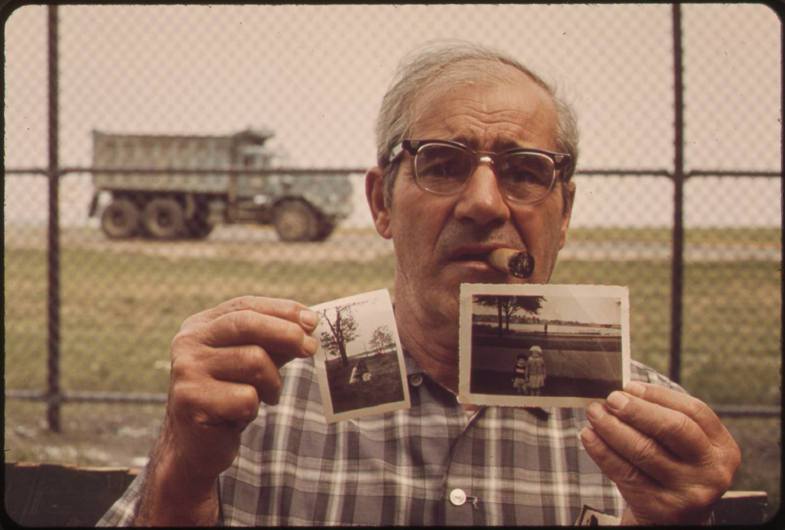
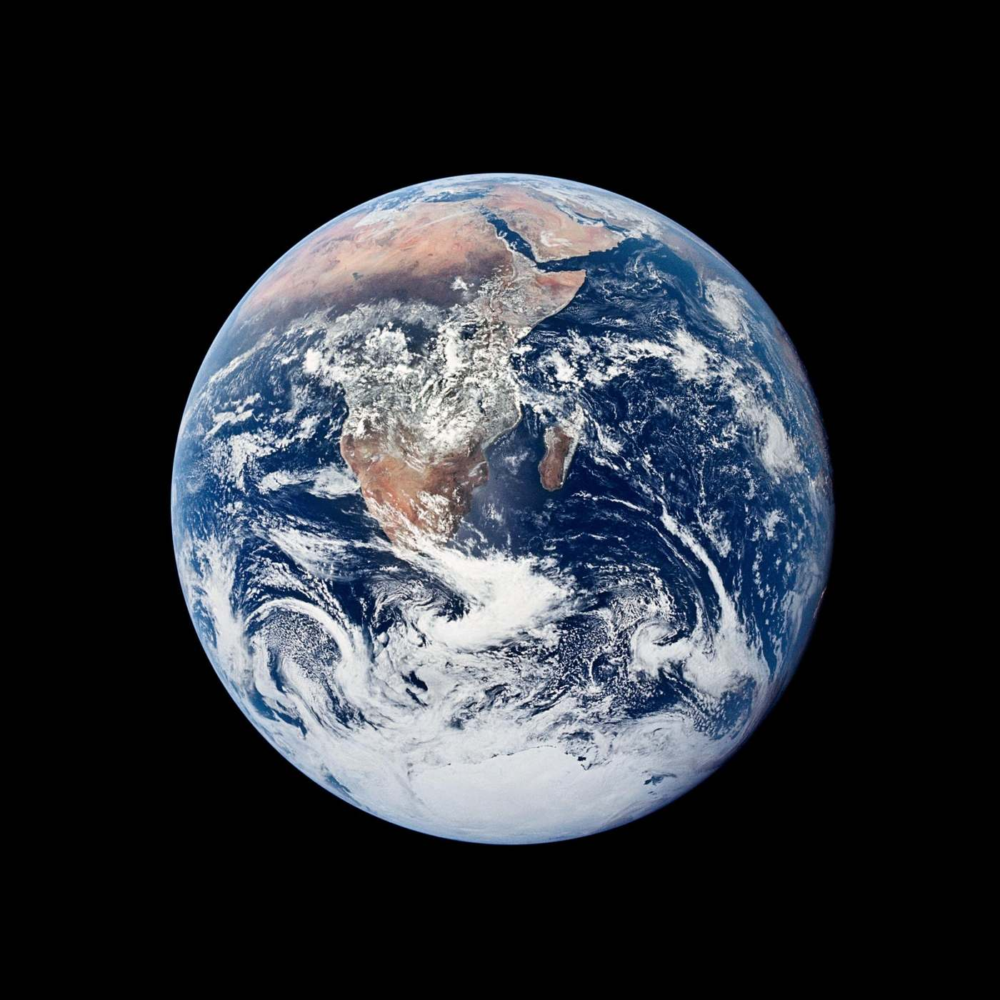

Every photograph is a promise:
this happened.

Some moments happen once.

Some changed how we see everything.

Some we promise to keep.

Some are all that’s left of someone.

And soon — some will never have happened at all.

Real moments deserve proof.


To protect what’s human
Keep what’s real, real.
Get early access
Every photograph on this page is real. Verification will always be free. The Android app is an early alpha (v0.4). It installs from our own site rather than the Play Store, so Android will warn you about “unknown sources” before it lets you continue.